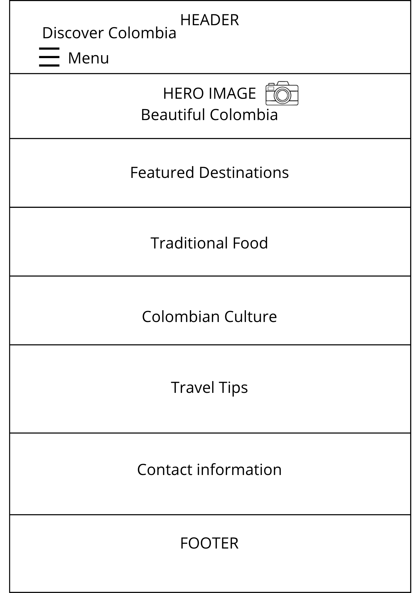
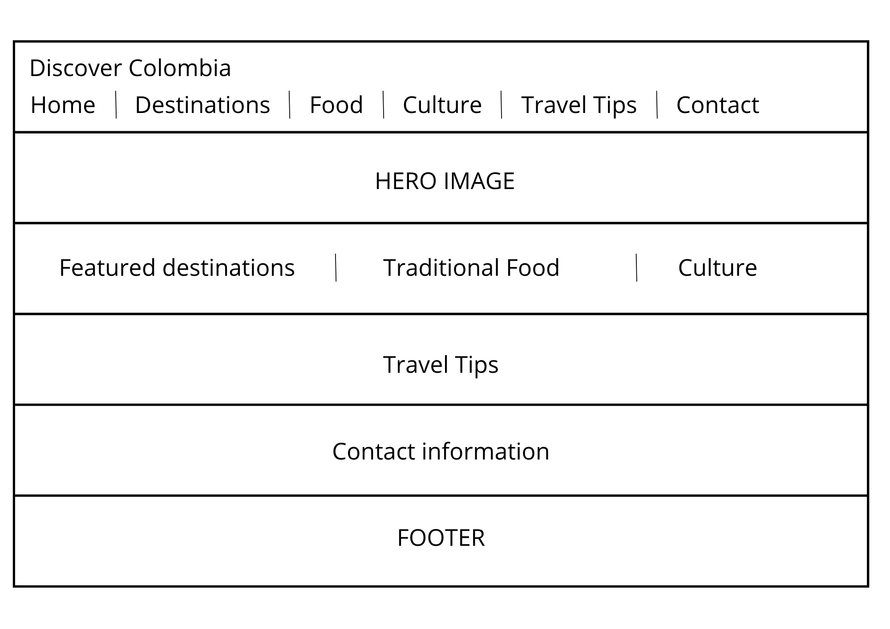

Site Name
Discover Colombia: Nature, Culture, and Travel
I chose this name because it represents the purpose of the website: to introduce visitors to Colombia's beautiful landscapes, rich culture, delicious food, and travel opportunities.
Site Purpose
The website provides information about Colombia, including its beautiful destinations, traditional food, culture, and travel tips. Visitors can explore different regions, learn about Colombian traditions, and use interactive features to discover places to visit.
Scenarios
- What are the best places to visit in Colombia for nature lovers?
- What traditional Colombian food should I try during my visit?
Color schema
- #003049 - Header, Footer, Headings.
- #FCD116 - Buttons and accents.
- #F5F5F5 - Page background.
- #333333 - Body text.
Typography
- Montserrat - Used for headings (H1, H2, H3).
- Roboto - Used for body text, navigation and footer.
Wireframes
Mobile View

Desktop View
